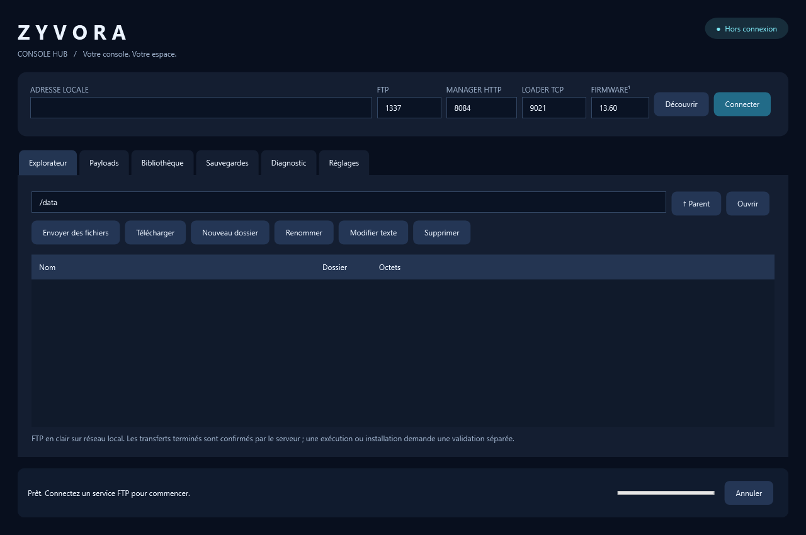

Explorez vos fichiers
Liste, envoi, téléchargement, renommage et dossiers via FTP. Modifiez les petits fichiers texte avec confirmation avant remplacement.
Transfert validé sur matérielWINDOWS • GRATUIT • CODE OUVERT
Vos fichiers, vos outils, vos payloads. Un espace clair pour garder le contrôle de votre PS5 et de ses services homebrew.
Version 0.1.0 • Windows x64 • Validation détaillée, sans promesse de compatibilité universelle.
01 / L’ESPACE ZYVORA
Une interface native Windows, un explorateur accessible et des actions explicites. Votre adresse et vos ports restent sous votre contrôle.

02 / LES OUTILS DISPONIBLES
Liste, envoi, téléchargement, renommage et dossiers via FTP. Modifiez les petits fichiers texte avec confirmation avant remplacement.
Transfert validé sur matérielEnvoi ELF/BIN au loader TCP ou stockage dans Payload Manager. Source, licence et empreinte accompagnent l’entrée du catalogue.
Exécution console à validerCopiez un répertoire FTP et vérifiez le manifeste SHA-256. Les sauvegardes chiffrées restent dans leur format d’origine.
Testé avec serveur localImportez un journal etaHEN. Des règles lisibles suggèrent des vérifications sans prétendre identifier une cause certaine.
Diagnostic à règlesInstallation PKG distante, cheats solo, jaquettes, plugins, mises à jour automatiques et application PS5 installable sont encore en développement. Ces fonctions ne sont pas proposées comme opérationnelles dans 0.1.0.
03 / DOCUMENTATION
Chargez un serveur FTP compatible avec votre jailbreak. Le port HTTP de Payload Manager sert à son interface ; il ne remplace pas le port FTP.
Saisissez l’IPv4 locale affichée par la PS5, ou utilisez Découvrir. Ports courants documentés : FTP etaHEN 1337, ftpsrv 2121, loader ELF 9021.
Connectez, ouvrez un dossier, puis testez un petit fichier. Faites une copie de sécurité avant de modifier une configuration.
FTP gère les fichiers. Payload Manager HTTP gère ses propres payloads. Le loader TCP reçoit un fichier ELF/BIN pour le charger. Le succès d’un envoi ne prouve pas son exécution.
L’application 0.1.0 ne contient ni compte ni télémétrie. Les connexions console restent locales. Les téléchargements du catalogue contactent la source GitHub. Les mots de passe FTP ne sont pas enregistrés.
Installez le SDK .NET 8 sur Windows. Le script scripts/build.ps1 compile le logiciel et son installateur autonome. Le code ZYVORA est sous licence MIT ; les projets du catalogue conservent leurs licences.
04 / TÉLÉCHARGEMENTS
Installateur Windows et archive portable, distribués gratuitement via GitHub Releases après publication du dépôt.
Publication GitHub en préparation. Les binaires sont disponibles dans le dossier de livraison local.
Consulter toutes les versions →EXE autonome x64. Version initiale non signée. Comparez l’empreinte avec SHA256SUMS.txt.
05 / SUPPORT
Vérifiez qu’il s’agit d’un serveur FTP. Un service HTTP sur 8084 peut répondre tout en refusant le protocole FTP. Consultez les réglages du serveur activé sur la console.
Vérifiez le firmware exact, la version et les instructions d’origine. Ne chargez pas une deuxième instance etaHEN/kstuff. L’application ne certifie pas l’exécution distante.
Pour signaler un problème : version ZYVORA, firmware, service utilisé, action précise et message d’erreur. Retirez les noms de fichiers privés et autres informations personnelles de vos journaux.
Ouvrir un signalement sur GitHub →